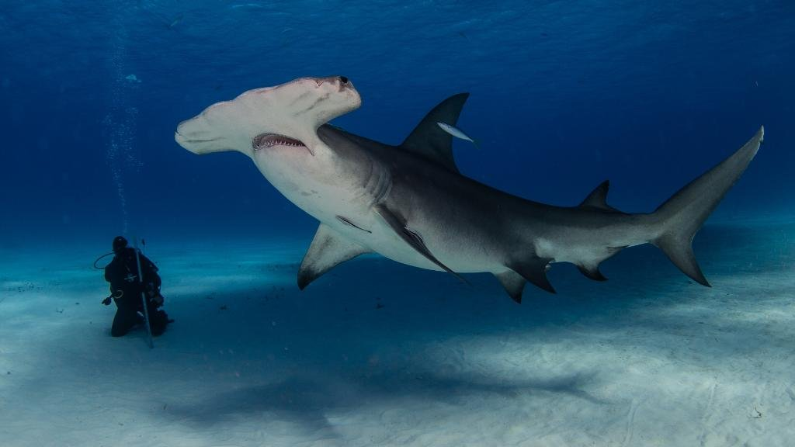

BITEY FISH
back to home

HAMMERHEAD SHARK
ABOUT ME
The unique ‘hammer’ shaped head helps the shark zone in on prey by detecting the direction of a scent, and enabling it
to see prey both above and below at the same time. Like humans, hammerhead sharks are long-lived, reach maturity after several years, and have few babies. These
characteristics make them particularly vulnerable to overfishing. Australian hammerhead shark populations are in decline. Scalloped hammerheads are estimated to have lost up to ~80% of
their original population in Australian waters. Hammerhead sharks are particularly vulnerable to being caught in gillnets (fishing nets) because of the unique shape of
their head.
ENVIRONMENTAL THREATS
The growing trade in shark fins –often used to make an expensive Asian soup—has become a serious threat to many shark
species. The latest research suggests that around 100 million sharks may be killed annually, often targeted for their
fins. This practice affects many different shark species, including whale sharks. The overfishing of sharks happens because of the huge demand—mainly for shark fins—and a lack of management to ensure
shark fisheries are sustainable. Some species, such as spiny dogfish and porbeagle, are targeted primarily for their
meat. The oceanic whitetip, porbeagle and three hammerhead species are some of the shark species of concern for WWF,
where the impact of trade is contributing to declines in populations. Millions of these sharks continue to be fished annually to
supply the persistent demand for their fins and meat. Controls on fishing are woefully insufficient. As a result, the
oceanic whitetip, porbeagle, and the smooth hammerhead are classified as vulnerable by the IUCN, while scalloped and
great hammerhead sharks are classified as endangered.
ENDANGERMENT RISK: CRITICALLY ENDANGERED
SOURCES
𓆟 worldwildlife.org
𓆟 marineconservation.com